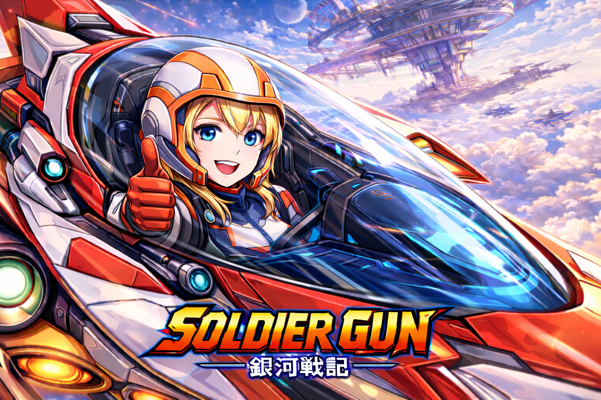
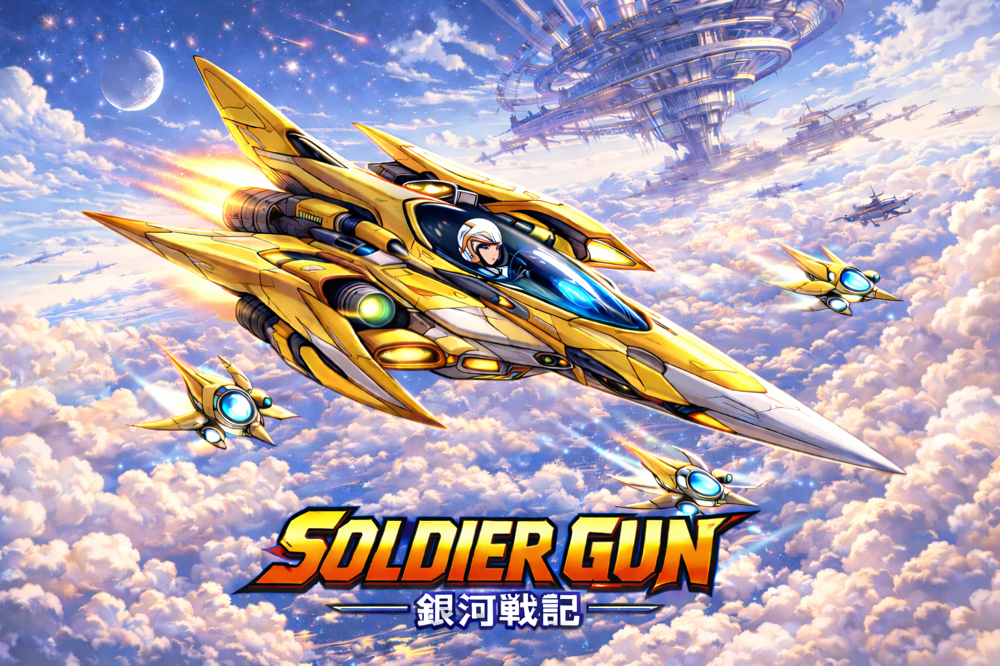
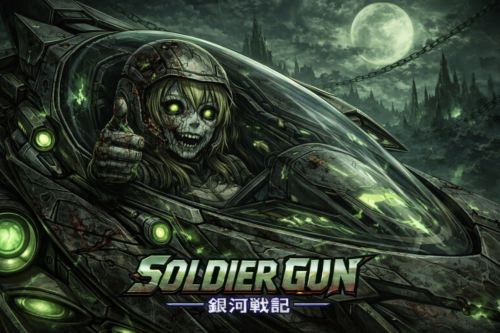

Universe Core
A single pilot across multiple states of power.
Project Identity
Soldier Gun blends late PC Engine shooter readability with a more elaborate lore structure: one ship, one heroine, multiple divergent routes. The project centers on transformation without losing silhouette or identity. The ship stays recognisable. The pilot changes in energy, tone, and mythic alignment.
- Main pilot: Reina Solari (レイナ・ソラリ)
- Callsign: Valkyrie-01
- Ship: Soulshugan
- Dark form: Reina Noctis (レイナ・ノクティス)
Route Structure
Light PathAngel Ascension
Dark PathDemon / Vampire Evolution
Corruption PathZombie Instability
Transcendence PathAI Singularity
Creator Transmission
The project comes from a lifetime of shooter obsession.
Slim Shady

Soldier Gun is created by Slim Shady, a long-time retro-game enthusiast and dedicated shoot-'em-up fan whose history with the genre goes all the way back to the original PC Engine era. After getting into the hardware in the late 1980s, the fascination never faded. Fast arcade shooters, bold cover art, HuCard and CD releases, obscure hardware variants, and the particular style of Japanese console shooters all became part of a lifelong collecting and playing habit.
That passion grew into a serious collector's relationship with the platform: not just the games, but the machines themselves. The collection spans major PC Engine hardware including the PC Engine LT, PC Engine GT, Super CD-ROM², PC Engine Duo, SuperGrafx, and other variations, alongside a near-complete library of games. The same love extends to other core 16-bit systems too, especially the Mega Drive, Super Nintendo, and Super Famicom. Repeated trips to Japan helped deepen that connection to the culture, the hardware history, and the aesthetic roots behind this project.
Why this project exists
Soldier Gun is not meant to be a sterile clone of an old shooter. It is a personal love letter to that era, built from the perspective of someone who still actively plays, studies, and collects these systems today. The goal is to carry forward the energy of PC Engine shooters while letting the presentation, universe, and soundtrack evolve into something original.
This project is also intentionally experimental in how it is being made: Codex is part of the creative process as an AI collaborator, helping translate spoken ideas into code, systems, copy, structure, and production momentum. Soldier Gun is both a game universe and a proof that an AI-assisted development workflow can still feel personal, obsessive, and full of human taste.
PC Engine Collector
Shmup Lifelong Fan
Japan-Inspired Aesthetic
AI-Assisted Production
Transformation Matrix
Forms currently defining the tone of the world.
Reina Solari (レイナ・ソラリ)
Base form. Balance, humanity, and the default combat identity.
Reina Aetheris
Elite precision state. Enhanced targeting, perception, and control.
Reina Solaris
Golden ascendant power route. Overcharge, burst damage, full offensive authority.
Reina Lumina
Celestial salvation route. Shields, healing, and radiant energy projection.
Reina Noctis (レイナ・ノクティス)
Abyssal sovereign route. Hellfire, rage, and destructive field pressure.
Reina Sanguis
Crimson predation route. Control, drain, and elegant battlefield dominance.
Reina Blight
Infected-core corruption route. Toxic spread, instability, and body-horror pressure.
Reina Nexus
System override route. Hacking, digital weapons, and multi-target machine supremacy.
Artwork Preview
Good-route radiance and evil-route breakdown.





Soundtrack Direction
Title music, stage music, and route-specific atmosphere.
Current music system draft
The title shell already rotates artwork and soundtrack states. The current design splits the music into two atmospheres: good and evil. Good-route visuals pull from the uplifting and mission-oriented soundtrack pool. Evil-route visuals are locked to darker omake and corrupted-route music.
The inspiration behind this direction comes from multiple sides of retro game music history: the hard-edged action legacy around Turrican and Manfred Trenz, the unmistakable melodic force of Yuzo Koshiro, and the kind of larger-than-life shooter scoring that made late arcade and console soundtracks feel like full combat mythologies. Soldier Gun aims to absorb that energy and reshape it into something personal: part PC Engine shimmer, part Mega Drive aggression, part sci-fi opera.
Title themes
Stage themes
Endings
Instrumentals
Omake / Evil remixes
Featured track concepts
-
Soldier Gun - Title Theme 1
Fixed opening theme
-
Soldier Gun - Title Theme 2
Alternate main title atmosphere
-
Stage 3: Arc Vale Breach
Multi-part assault scoring energy
-
Stage 4: Meridian Fortress
Carrier pressure and descent escalation
-
Stage 5: Astral Gate
Orchestral and late-stage cosmic route
-
Omake: Hell on Earth
Evil-pool infernal bonus soundtrack set
Behind The Build
The current prototype stack.
Engine
Soldier Gun is being built in Godot 4, but the goal is not to make it feel like a generic modern indie engine project. The idea is to use a current toolchain to chase the speed, clarity, and screen discipline of late PC Engine and 16-bit shooter design: fixed 4:3 framing, fast response, strong sprite readability, layered presentation logic, and a structure that can eventually support route systems, transformation states, soundtrack logic, and gallery-style extras without losing that tight arcade core.
Frontend shell
The front-end shell is basically our attempt to build the kind of deluxe “special mode” presentation that retro fans always wished old shooters had more of. Instead of dropping straight into a plain menu, Soldier Gun boots into a proper command-deck interface with rotating title art, music playback, mood-sensitive presentation, and window/fullscreen behavior designed to make it feel like a real desktop release. It is part launcher, part museum display, part love letter to the ritual of starting up a favorite game.
Artwork system
The artwork system is intentionally overbuilt in the best possible nerdy way. Rather than using one static title image, the project separates visuals into good and evil pools and rotates them dynamically. That means the title presentation can swing between heroic route energy and corrupted-route menace, with the shell pairing images to matching soundtrack moods. It turns the startup screen into something closer to an attract-mode gallery, where every launch feels a little different without breaking the universe logic.
Audio system
The audio side is being treated less like “add some background tracks” and more like cataloguing a real game soundtrack line-up. Title themes, stage themes, ending themes, instrumental cuts, omake tracks, and darker alternate mixes are all being grouped and named in a way that reflects how retro fans actually think about game music. The long-term idea is that Soldier Gun should feel like the kind of project where the soundtrack itself has lore, mood identity, collector appeal, and enough structure that even the website can preview it like a miniature soundtrack archive.
Devlog Shape
How updates can look on the future live site.
Website rollout proposal goes live
Update: The first public-facing Soldier Gun website draft is now online with lore, creator context, artwork pools, soundtrack previews, and a first real devlog structure. This turns the repo from a file archive into an actual presentation space for the project.
Title shell reaches dual-atmosphere presentation
Update: Good and evil artwork pools are now linked to matching soundtrack moods, with title bar polish and route-sensitive presentation.
Universe canon and character forms locked in
Update: Names, route paths, and the transformation matrix are now stable enough to drive story copy, soundtrack naming, and gallery categories.